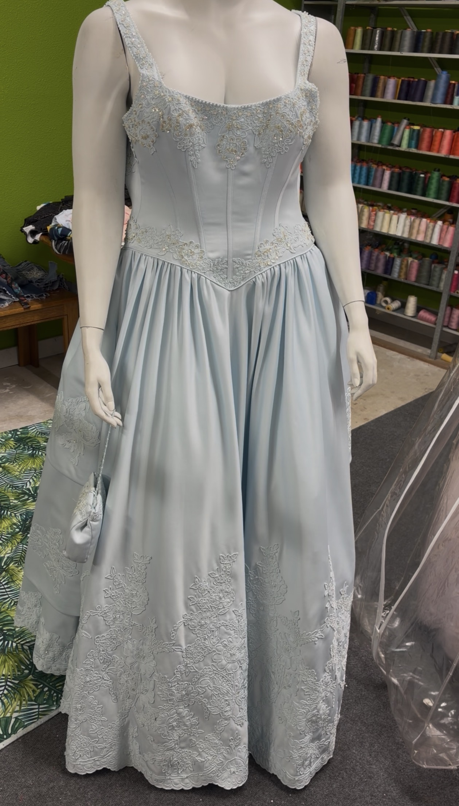
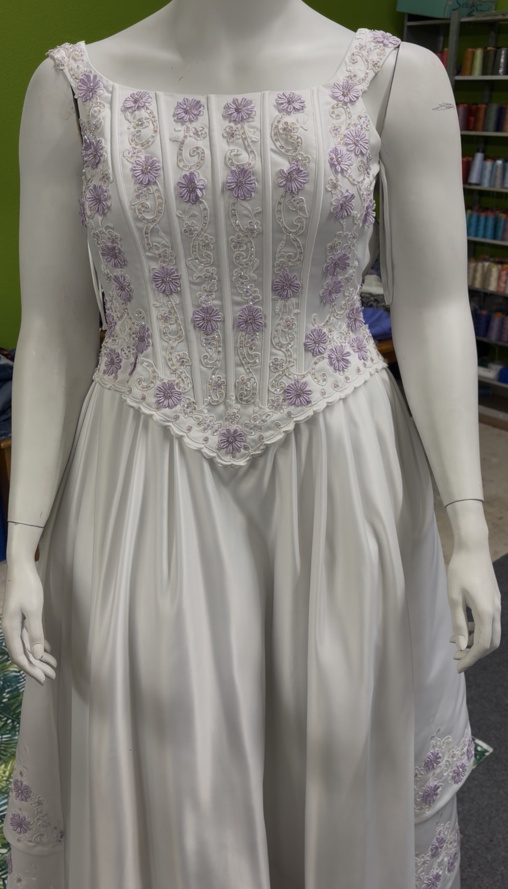
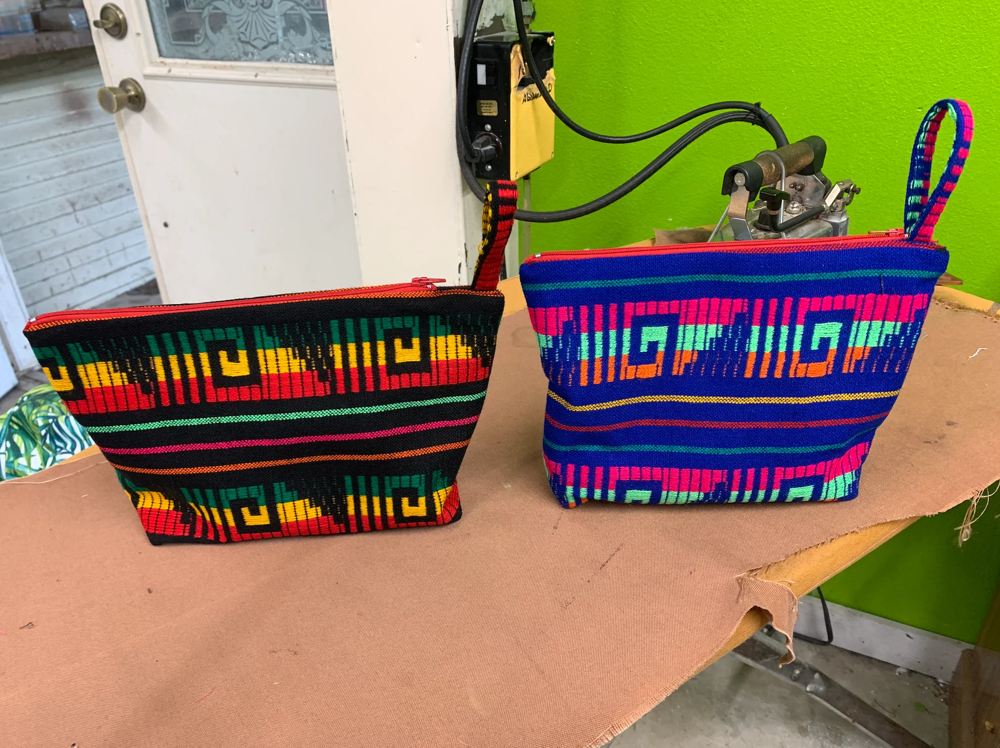
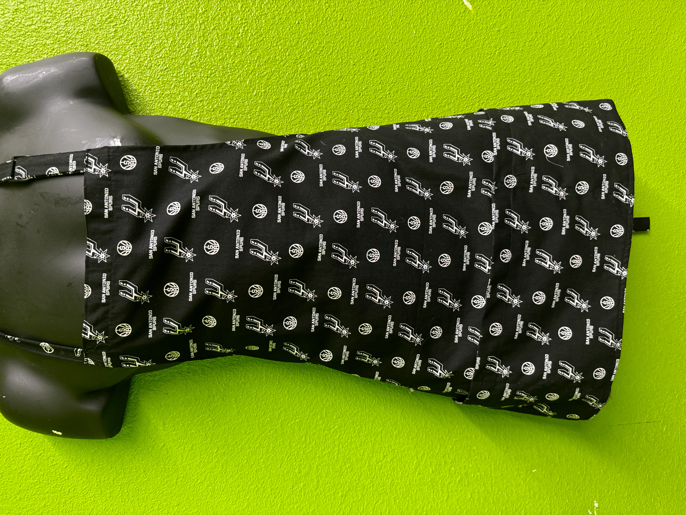

Galería de Fotos y Videos
Algunas de las creaciones de Rachel: costura, trabajos personalizados y cocina — hecho con amor.







Algunas de las creaciones de Rachel: costura, trabajos personalizados y cocina — hecho con amor.